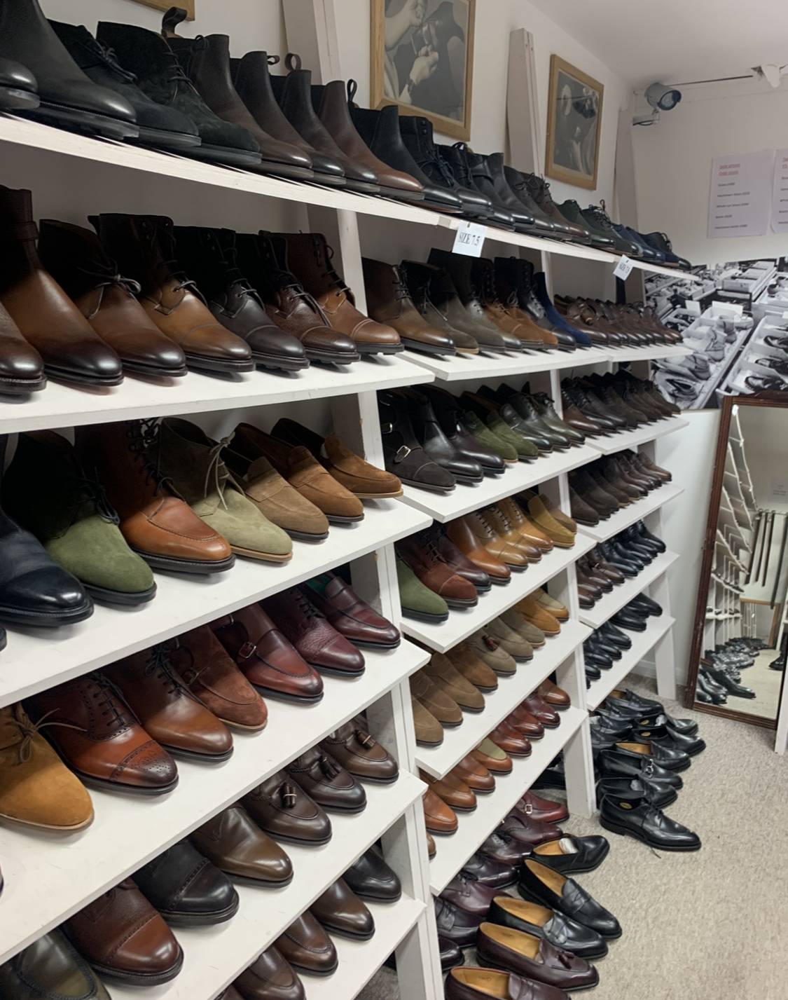
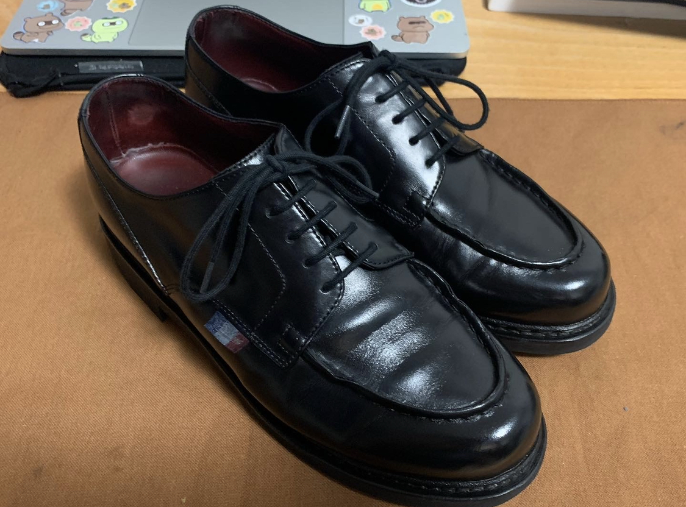

午前中は家で数学をしていた. 午後はドイツ語のクラスに合格したことの証明書を取りに大学に行った. 外は散歩日和だったので6kmほど歩いた.

現在ドイツの大学院にいます. 内部モデル理論を研究しています.
01.03.2023
3月になりました. 今月はLarson--GrigorのPmax使ったsquareを破壊する論文を目標にしたいと思う.
Pmax関連で修士は結果を出して論文を書きたい(と最近は考えてる).
彼らの結果に加えてあとは指導教官とAsperoが最近出したデカイ結果も追う予定である. (ちなみにこの結果で指導教官とAsperoはHausdorff Medalを去年取った. )
一日中家にいた. 途中休憩がてらスーパーに買い出しに行った. 面倒なのでパジャマ, 裸足にローファーで近所のスーパーまで毎回行っている.
ファッションとして裸足にローファーが恋人から不評なのでローファー用の短い靴下が欲しい.
02.03.2023
午前中は家で数学をしていた. 午後はドイツ語のクラスに合格したことの証明書を取りに大学に行った. 外は散歩日和だったので6kmほど歩いた.
大学の事務所が開く時間より早く着き過ぎてしまったので中心街に行った. 途中いつも見る銅像が埋まってるのを見つけた. 修理中なのだろうか?
まずはいくつか革靴を置いてる靴屋を軽く見に行った. そこではクロケット, Alden, Santoni, Magnanni, あとは自分が知らないEU内の国のブランドが置いていある.
ただあまり置いてる革靴の管理の仕方良くないのかずっと置いてあるのか, あまり状態が良くないものもある.
革靴用品が置いてあるのでそのうちお世話にはなるかもしれない.
そのあと家電量販店に行ってイギリスで使える変換プラグを買った. Apple製品を充電する際は変圧器が必要なく, 変換プラグだけで十分である.
旅行する際にはとても便利である.

そのあとは証明書を受け取って家に帰った. 今日の革靴はAUDLEY. 最近履いてなかったので久しぶりの出番である.

02.03.2023の夜, 03.03.2023
夜は大学のロジックグループでパーティーに参加した. 道中でかっこいい教会を見つけた.

パーティーではビールをめちゃくちゃ飲んだ. 日付が変わってからは音楽をかけて踊った.
ドイツのパーティーは音楽(EDMとかズムズムするやつ?)をかけて楽しむというイメージがあったので体験できて楽しかった. 先輩がオランダに引っ越すとのことで物をいくつかもらった.
すり鉢や物差しをもらった. 家までは歩いて帰った. その時のことはあんまり覚えていない.
今日読んだ証明の重要なステップについて改めて考えたり, コンパクト集合について考えたりしていた.
コンパクト集合について考えているうちに有限個のすり鉢でミュンスターを被覆できることに気づいた. それを試しながら帰ったことまで覚えている.
次の日起きたらよくわからない写真が大量にあったので供養しておく.


かなり二日酔い気味だったが大学に行った. 学食は今日のメニューは美味しかった. メインはドイツ料理っぽい.
帰って数学したり, 昼寝したりした. 夜は昨夜履いた靴をほったらかしにしていたのでそれの手入れをした. ついでに今日はいた靴も丁寧にブラシをかけた.
飲みに行く時は多少汚れたり, 濡れてもいい靴を履くようにしている.
手入れに関しては履いたあとはブラシをかけて, 5回ほど履いたらクリームを入れるようにしてる. 3, 4ヶ月に一度はより本格的なメンテナンスをするようにしてる.
それにしても素晴らしい光沢である. 惚れ惚れしますね. よく手入れされていて状態の良い革靴が足元にあるとテンションが上がりますね.
04.03.2023
今日はほとんど家で数学をしていた. 昼頃に仕立てた紺ブレザーが届いたと連絡が来たので紳士服店に受け取りに行った.
非常に満足である. イギリス旅行に間に合わないと思っていたが間に合ったので, これを着ていこうと思う.
店員の対応がとても親切で良かった. また夏直前に同じ店でジャケットを仕立てるつもりである.
\(\mathbb{P}_{\max}\)について考えていた. Generic \(G\)の元\(p\)に対して, \( a_{p}\)を\(A_{G}\)に送る\(p\)のiterationの存在は一見choiceを使っているように見えるが, うまく工夫をするとchoiceなしでできることに気づいた. Generic iterationの一意性が偉いねという話だった.
\(\psi_{\mathrm{AC}}\)が\(\mathbb{P}_{\max}\)-extensionで成り立っていることを確かめた. ついでにそれとは別に\(\omega_{1}\)-DCが成り立っていることも確かめた. \(\omega_{1}\)-DCの方はいつもの議論だったのですぐ示せた. Woodinの\(\mathbb{P}_{\max}\)本をちょくちょく参照した. \(\mathbb{P}_{\max}\)本欲しいのだが, 約900ページの鈍器なので実際に開いて読むのがとても大変そうである. 明日で今読んでいる論文は読み終わりそうである.
05.03.2023
午前中はカフェに行った. 早速仕立てた紺ブレザーを着て行った. かなり良い.
そのあとは帰って数学したりダラダラしていた. ロンドンからノーサンプトンへ行く列車のチケットを買った. 50ユーロぐらいだった.
夜キムチと鶏肉の炒め物を作って食べた. しかし加熱が不十分だったためか深夜に強烈な腹痛に襲われて大変な思いをした. 次はちゃんと加熱します.
06.03.2023
家で数学をしていた. 朝雪が降った.
今回の旅行で訪れる予定のところがカード支払いに対応しているか一応調べた. どうやら大丈夫そうだ.
流石に2000ユーロ弱の大金を持ち歩きたくないし, 両替するのも非常に面倒なので良かった.
イギリス旅行記(09.03.2023--11.03.2023)
3日間イギリスに行ってきました. 1日目はロンドン観光, 2日目はノーサンプトンでファクトリー巡り, 3日目はロンドン観光をしました.
行きたいところだけリストアップしといて臨機応変に観光しました.
1日目:
行きはデュッセルドルフ空港からロンドン ヒースロー空港に飛ぶ航空機でした. 朝10時の便を取りました.
朝8時くらいにはデュッセルドルフ空港についておきたく, またドイツの鉄道があまりにも信用できないこともあり5時25分の列車に乗って空港に向かうことにしました.
朝3時に起床して, 4時すぎに家を出ました. 早すぎ.
これなら5時25分の便が突然運休になっても次の便に乗れる余裕があるので8時には着くだろうという読みでした. そして読み通り乗る予定の電車は空港まで行かなくなりました(完).
これだからDBは... エッセンまで行って乗り換えることにする.
今回は荷物を出来る限り減らしたいので持っていく革靴は1足のみです. 同じ革靴を連続で履くことは普段絶対にしませんが今回ばかりはしょうがない.
ロンドンは雨予報, ノーサンプトンは雪予報だったので雨用の靴ということでシャンボード BBRにしました. 見栄えを良くするためにつま先だけ鏡面磨きをした. 下手くそである.
列車は朝イチだったのでほとんど乗客はいなかった.
無事デュッセルドルフ空港に着き, ドイツを出国しました.
いざイギリスへ
1時間40分のフライトを終え, 無事イギリスに上陸した. 東京から鹿児島に帰るのと体感変わらなかった. いざ入国審査へ.
特に問題なく入国できました. 今回の目的は観光で, ドイツで数学してまーすって言ったら入れた.
地下鉄ピカデリー線に乗ってロンドン市内に向かいます. ホテルがキングスクロス駅の隣なのでキングスクロス駅まで向かう.
SubwayではなくUnderground!! オイスターカードというPASMOみたいなカードを買った.
現金でチャージできないのは不便だった. あと接触感度は日本のICカードよりかは悪い. 地下鉄は蒲鉾みたいな形だった. 汚いがイタリアで乗った電車よりかは綺麗だった.
道中は外の景色を眺めていた. 街並みはドイツのそれより私は好きである. キングスクロス駅に到着した.
駅から外に出てもう既にテンションが高い私である. まずは荷物をホテルに預ける.
イギリスにもFIVE GUYSがあって個人的にウケた. ドイツにもあるが美味しいらしい. ファストフード店に行く機会があまりなく, まだ行ってない.
ロンドン観光開始である.
予定としてはトラファルガー広場, バッキンガム宮殿, ウェストミンスター宮殿, ビッグベン, ロンドンアイ, ジャーミンストリートを見に行くつもりであった.
大英博物館は見て回るにはどう考えても時間が足りないとわかったので次の旅行の時に取っておくことにした.
ドイツにいる間はイギリスに行こうと思えば(距離的, 時間的, 費用的にも)いつでも行けるので最上級に美味しいものはしっかりと後で味わうことにしたい.
今回の主目的はロンドン市内の街並みを堪能することと革靴ハンティングである. イギリス市内を歩きたいとずっと思っていたので歩く.
道中庭園を通った. 雨が降っていたがそれを含めて街の雰囲気がとても良かった. 庭園に植えてある木がどれも複雑な形をしていた.
ミュンスターに生えている木は寒い地方に生えているような木ばかりなのでまずそこで植生の違いを感じた.
結構歩いてトラファルガー広場についた. トラファルガー広場では政治演説をしている人が多いらしいが今回はいなかった. 雨だったからだろう.
朝3時起きで流石に疲れたのでパブに入る. 道中の街並みが良かった. ジントニックを飲んで, 軽く食べた. 疲労のせいかめちゃくちゃ酔った.
全て書くことは困難とわかったので気が向いた時に続き書きます. 革靴のことだけ書きます.
ノーサンプトンのファクトリーショップを回りました. ノーサンプトンを歩いて回りました. 15kmほど歩きました.
朝7時半の電車に乗ってエドワードグリーンのファクトリーショップに開店凸しました. 工場内も少しだけ見れました. (写真はダメだった. )

(今回の旅のいちばんの目的である)DOVERを買いました. 部屋一面にエドワードグリーンの靴がありテンションが上がりまくってしまった.
そのあとジョンロブのファクトリーショップを見に行きましたが閉まっていました. 次にトリッカーズへ向かう.
工場の内部も見れました. カントリーブーツを作っているところが見えました. その後チャーチへ向かうもあまり欲しいものは見つからず. ショップ内も普通にチャーチの店という感じでした.
今回に限らず毎回チャーチ買おうかなって見に行って結局買わないを繰り返している. チャーチの靴よりクロケットの靴の方が自分は好きである. 軽く食事を取ったあとクロケットへ向かった.
クロケットに関しては欲しいモデルが4つほどありかなり悩んだ. かなり悩んだ結果茶のキャベンディッシュ2を買った.
雑にノーサンプトンファクトリー巡りを描くとこんな感じでした. 数日経った今またイギリスに行きたくなっています.
16.03.2023
指導教官と修士で今後どうするかについて話した. うちの大学では修士は3セメスター目(M2の前半)から指導教官を決めて何かしらを始めるのが通常らしい.
指導教官にそれを早めて次のセメスターから始めることを相談したら快諾してもらえたので良かった. 4月からプロジェクトスタートです.
論文をいくつか紹介してもらったので3月の残りはそれらを読むことになりそうである.
17.03.2023
家でのんびりしていた.
18.03.2023
家で数学. ロードオブザリング見たくなってきた.
21.03.2023
家で数学をしていた. 最近Wがよくブログを更新していて読むのが楽しい. 勝手にブログ仲間だと思っている()
WBC関連インタビューとか見ていて, 英語もっと流暢に喋れるようになりたいと思った.
英語のネイティブスピーカーと自分だと話すスピードが1.5倍くらい違うし, 話の密度, 引き出しの多さも全然違うので凹む. 練習あるのみである.
あとは口語的な表現とか日本にいた頃は使ったことがほとんどないのでそれに関しても難しさを感じている. 今のところは自然には出てこない.
晩御飯に玉ねぎを丸ごと入れたコンソメスープを作った. かなり美味しかった. キャベツ スープは作るの簡単なのでこれからももっと作ろうと思う.
今年のどのタイミングで日本に帰国しようか考えていた. 今のところは今年の夏前までの進捗次第ではあるなぁ...と思っている. 何かしら結果を得ることができていたら秋ごろに帰ってもいいなぁと思っている. 今年のうちに多少なりともちゃんと結果を出したい
22.03.2023
ミュンスターも少しずつ暖かくなってきた. しかしまだ春が来たとは言えない寒さがある. 私は寒い方が好きなのでこのぐらいが好きかもしれない.
春夏に向けてシャツを注文した. 普通のボタンダウンシャツである. シャツはブルックスブラザーズと決めている. 実際ブルックスブラザーズのシャツは非常に良いものだと思う.
24.03.2023 and 25.03.2023
靴を磨いたり, お部屋を掃除したりした.
Edward GreenのDOVER. 革質の圧倒的良さを感じる. 足馴染みの良さも異常である. 素晴らしい靴としか言いようがない.
残念なことに値上げがアナウンスされている. DOVERは25万円ほどになるそうだ. チェルシーやカドガンも今回の値上げで20万円を超える.
凄まじい世界である.
他の靴もまとめてメンテナンスした.
パンツが思ったよりか青かった.
土砂降りにあってびしょ濡れになったパラブーツを手入れした.


DOVER
夜は今月でミュンスターを去って日本に帰る先生と見送りに行った. ミュンスターにある唯一のラーメン屋に行った. 道中桜が咲いているのを見つけた.
店内はいい雰囲気だった. 牛丼など丼メニューもあったのでまた来たい. 味噌ラーメンを食べた. 麺が伸びていたのが残念.
Alsterという飲んだことないビールがあったので飲んでみた.
IPAのような感じだったが, IPAよりずっとさっぱりしていてジュースのように飲めるビールだった. ドイツにいると様々なビールが楽しめるのでとても良い.
2件目はミュンスターに昔からあるバーに来た. ビールの醸造を昔からしているらしい.
26.03.2023
数学をするわけでもなく家でダラダラしていた.
27.03.2023
夕ご飯のスープを鍋ごとぶちまけて大変なことになった.
28.03.2023
サマータイムによって日本との時差が7時間になったが, まだ慣れていない.
3月末なのにもう日が長くなってきている. 今は夜8時過ぎまで外が明るい. 真夏になると10時過ぎまで外が明るいらしい. 流石高緯度帯である. 近所に大きな人口の湖がある. 夏になったら夜その辺りでビールを飲もうと思っている. ドイツの夏は日本のそれと違って湿度が高くない分過ごしやすいらしい. 夏が楽しみである.
29.03.2023
スマホから打ってるので句読点が、と。です。
数学科修士課程の集まりがあった。夏学期入学の人も来ていた。日本から来た人もいた。代数幾何をしているらしい。エジプトから来た人とも知り合った。イスラム教の話を聞いていた。ヨーロッパ圏の人もイスラム教には興味があるのだろう。
人と会って話したら疲れて、結局帰っても数学をしなかった。無。こういうときは精神的に厳しくなりがち。何と無く将来のことなどを考えたりもした。たまには弱気な気持ちにもなる。(とは言いつつも普段は強気なわけではない。)
このまま数学をやっていけるのだろうかという不安は常にある。こんなことをウダウダ考えてないで数学をするべきなのである。(注 これは自分の考えである:)数学者として活躍してる人は激烈に賢い人ばかりである。(もちろん賢いだけではない。もっとそれ以上ものがあるとも考えている。)
東大数学科の同級生や先輩後輩を見渡しても自分より圧倒的に賢い人間ばかりである。自分なんかがやっていける世界なのだろうかと不安にいつもなる。こういうことを考えながら書き込んでると頭がおかしくなるぜ。今はポルノグラフィティのサウダージを聴いている。最近平成ヒットソングのプレイリストを全て聴いてみようとしている。
ドイツ滞在記(2023年4月)